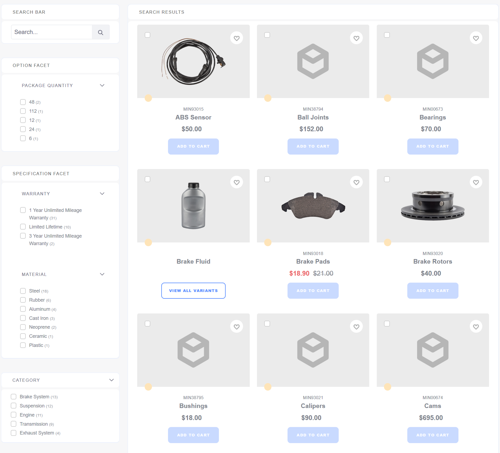
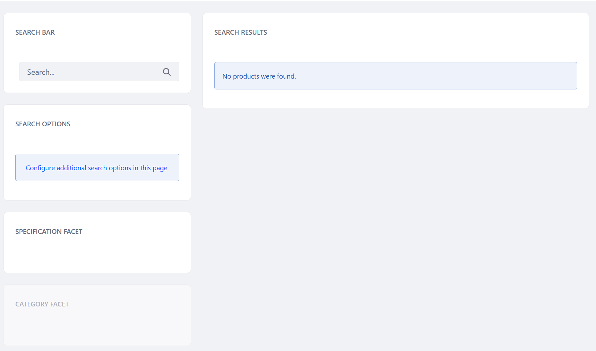

Catalog¶
The Catalog page is the primary entry point for users to browse and navigate through products that are being offered in a store. It requires the following widgets: Search Bar, Options Facets, Specification Facet, Category Facet and Search Results. To learn more about available widgets see the Widget Reference.
If using the Minium Accelerator to create sample data, all of the widgets have been added to the page.

Otherwise, the page without any sample data but using the same layout might look like this:
